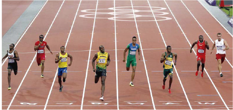

Aplico para aprender
Alumno:
Aplico para aprender
Alumno:
1. Relee la entrevista “Yo también puedo pasar”
Reconoce en el texto. los datos que identifican a la entrevista. Cópialos a continuación.Yo también puedo pasar
 Entrevista en Facebook al atleta Álex Quiñónez (AQ), corredor de velocidad en 200 metros planos masculino; luego de su clasificación a las finales de los Juegos Olímpicos de Londres 2012, donde alcanzó la marca de 20,37 segundos.
Miércoles 8 de agosto de 2012.
Entrevistador: Ya te llegó la tranquilidad después de esta clasificación, Alex. ¿Cómo te sentiste?
AQ: Ya me llegó la tranquilidad, por fin. Sentí mucha presión antes de la carrera, porque sentí que mucha gente me decía: “Tú puedes”. Inclusive, el señor vicepresidente del Ecuador me llamó a eso de la una y media y sentí que Ecuador y todo el mundo me apoyaba, pero estaba indeciso a causa de la presión que sentía.
Entrevistador: Hasta la carrera estabas tranquilo. ¿A qué hora te llegaron los nervios?
AQ: Los tenía desde que pasé la clasificación, y hoy, en la semifinal, me sentía más nervioso, pues soy el segundo deportista del país y primer atleta que llega a una final en Juegos Olímpicos, y no sabía cómo es.
Entrevistador: ¿Te asusta Usain Bolt?
AQ: No. Me pone nervioso la presión por la responsabilidad que tengo con mi país, no porque Bolt corra más, porque a la final, todos somos iguales en la competencia.
Entrevistador: ¿Qué le dices a Esmeraldas?
AQ: Esmeraldas es todo para mí, mi país es todo para mí. Los dos lugares son muy importantes y están en mi corazón.
Entrevistador: Seguramente mañana dejarás todo en la pista… AQ: Sí, todo lo que no pude dar hoy lo daré mañana. Al comienzo de la carrera de hoy tuve un poco de inconveniente en la salida, pero cuando estuve ahí y vi a los otros atletas al lado mío dije: “Yo también puedo pasar”. Entonces seguí, seguí y seguí hasta que llegué tercero.
Entrevistador: Gracias por darnos tu tiempo. Éxitos mañana. Ha sido un placer conocerte.
Entrevista a Alex Quiñónez (8 de agosto de 2012). Recuperado de https://goo.gl/QDjwVs
2. Identifica las afirmaciones más importantes de la entrevista.
¿Por qué estaba intranquilo el atleta? ¿Por qué no le asusta Usain Bolt? ¿Cuál fue la frase que lo motivó a seguir?
¿Por qué estaba intranquilo el atleta? ¿Por qué no le asusta Usain Bolt? ¿Cuál fue la frase que lo motivó a seguir?